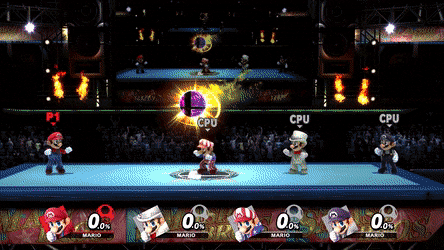

Super Smash Bros.
Super Smash Bros est une série de jeux vidéo de combat et de plates-formes éditée par Nintendo et développée en grande partie par HAL Laboratory.
Elle met en scène des combats entre de nombreux personnages majoritairement issus de l'univers des
jeux de la franchise Nintendo.
Depuis le premier opus, Super Smash Bros., publié en 1999 sur Nintendo 64,
la série ne cesse de se développer. En plus de l'amélioration des graphismes, le nombre de personnages et
de niveaux augmente à chaque nouvel épisode et de nouveaux modes font leur apparition.
Super Smash Bros.64
Initialement paru le 19 novembre 1999 sur la Nintendo 64, il est le premier épisode de la série.
Le jeu propose un total de douze personnages jouables, tous issus de séries emblématiques de Nintendo.
Le joueur a ainsi le choix entre Mario, Link, Kirby, Pikachu, Donkey Kong, Fox, Samus et Yoshi, auxquels
s'ajoutent Rondoudou, Luigi, Captain Falcon et Ness, qui peuvent être débloqués. Chaque personnage dispose
d'une palette de coups, dont trois spéciaux, que le joueur doit connaître pour adapter sa stratégie.
Outre le mode versus qui permet jusqu'à quatre joueurs de s'affronter, le jeu dispose d'un mode solo
proposant diverses activités, comme briser des cibles, activer des plate-formes et parcourir le mode
Classique.
Super Smash Bros. Melee
Publié le 24 mai 2002 sur GameCube, il est considéré comme étant le deuxième épisode de la série.
Le jeu s'appuie sur la mécanique introduite lors du précédent opus : les combats entre des personnages
issus de séries emblématiques de Nintendo. Ainsi, quatorze combattants viennent s'ajouter à ceux déjà
présents dans l'opus précédent, montant le nombre de personnages total à vingt-six.
Par ailleurs,
la palette de coup a été agrandie, chaque personnage disposant désormais de quatre coups spéciaux contre
trois dans l'opus précédent. Concernant le mode solo, d'autres options ont été ajoutées comme les modes
Aventure, All-Stars et Événements. Enfin, cet épisode marque l'arrivée des trophées dans la série.
Super Smash Bros. Brawl
Sorti le 27 juin 2008 sur Wii, il est considéré comme étant le troisième épisode de la série.
S'inspirant toujours des mécaniques introduites dans les précédents épisodes, le jeu propose un total
de trente-neuf personnages jouables.
S'inspirant toujours des mécaniques introduites dans les précédents épisodes, le jeu propose un total de
trente-neuf personnages jouables. Le mode solo accueille également l'Émissaire Subspatial, qui met en scène
les personnages du jeu lors d'une aventure. Enfin, cet opus marque l'arrivée des Smash final, un coup
spécial puissant qu'un personnage déclenche après avoir brisé une Balle Smash.

Super Smash Bros. for Nintendo 3DS / for Wii U
Considérées comme le quatrième épisode de la série, la version Nintendo 3DS est parue le 3 octobre 2014
et la version Wii U le 28 novembre 2014. C'est la première fois que la série apparaît sur console portable.
Le joueur a le choix parmi un total de quarante-neuf personnages jouables, qui sont les mêmes pour les
deux versions. En revanche, les arènes diffèrent selon la version, bien que certains soient communs aux
deux. Bien qu'il n'y ait pas de multiplate-forme entre les versions, le jeu, qui est compatible avec les
figurines amiibo, permet au joueur, grâce à celles-ci, d'importer les combattants qu'ils ont personnalisés.
Enfin, le jeu est le premier de la série à accueillir du contenu additionnel gratuit et payant. Ce contenu
permet aux joueurs d'acquérir des combattants et des arènes supplémentaires, ainsi que des tenues pour
personnaliser les Mii.
Super Smash Bros. Ultimate
Paru le 7 décembre 2018 sur Nintendo Switch, il est considéré comme étant le cinquième épisode de la série.
Le jeu met à disposition du joueur l'ensemble des personnages jouables des épisodes précédents, en plus
d'en introduire de nouveaux. Le joueur a ainsi le choix parmi soixante-quatorze personnages qu'il doit
débloquer au fur et à mesure de son avancée dans le jeu. Douze autres personnages sont également disponibles
via contenu additionnel payant.
Par ailleurs, une nouvelle mécanique vient remplacer celle des trophées instaurée depuis Super Smash Bros.
Melee : les esprits. Il s'agit de bulles contenant des personnages issus des mêmes séries que celles dont
sont tirés les combattants et les arènes et dont le joueur peut se servir pour personnaliser son combattant.
Il peut ainsi, par exemple, augmenter sa vitesse, réduire les dégâts causés par le poison, résister aux armes,
etc. Les esprits se collectent au travers des différents modes de jeu. De plus, le mode histoire permet au
joueur d'apprendre à s'en servir et à varier leur utilisation selon les combats.